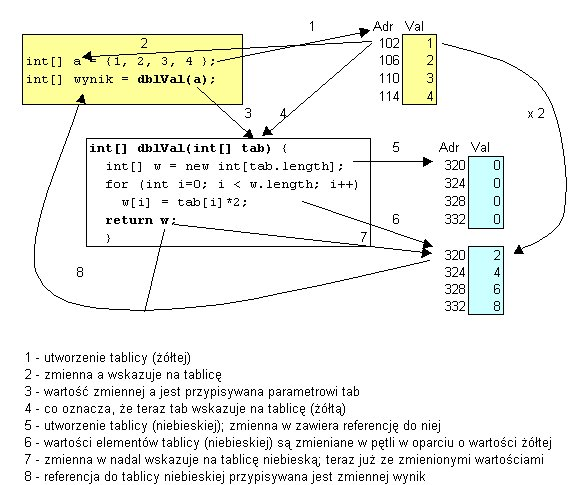

2. Zmienne tablicowe jako argumenty i wyniki metod. U¿ycie zmiennych tablicowych w przypisaniach
Zmiennej tablicowej typu typA[] mo¿na przypisaæ warto¶æ zmiennej tablicowej
typu typB[] pod warunkiem, ¿e dopuszczalne jest przypisanie warto¶ci typu
B zmiennej typu A.
Ka¿dej zmiennej tablicowej - jak ka¿dej zmiennej zawieraj±cej referencjê - mo¿na przypisaæ warto¶æ null Poniewa¿ zmienna oznaczaj±ca tablicê zawiera referencje do tablicy, to - pod pewnymi warunkami - mo¿emy jej przypisaæ referencjê do innej tablicy.
W bardzo naturalny sposób mo¿emy przypisywaæ referencje w przypadku gdy mamy do
czynienia z tym samym typem tablic (a zatem - z tym samym typem elementów
oraz z t± sam± liczb± wymiarów). Tak samo jak w przypadku innych obiektów - nie nale¿y myliæ przypisania
zmiennych tablicowych (czyli referencji) z kopiowaniem zawarto¶ci tablic.
Na przyk³ad poni¿szy program:
public class Test {
public static void main(String[] args) {
byte[] b1 = {1, 2, 3 };
byte[] b2 = {1, 2, 3, 5, 5 };
byte[] b = b2;
b2 = b1;
b2[0] = 77;
b[0] = 99;
System.out.print("\nTablica \"b1\":");
for (int i=0; i < b1.length; i++) System.out.print(" " + b1[i]);
System.out.print("\nTablica \"b2\":");
for (int i=0; i < b2.length; i++) System.out.print(" " + b2[i]);
System.out.print("\nTablica \"b\":");
for (int i=0; i < b.length; i++) System.out.print(" " + b[i]);
}
}
Tablica "b1": 77 2 3
Tablica "b2": 77 2 3 Tablica "b": 99 2 3 5 5 Wyprowadzi pokazane obok wyniki.
Zwróæmy uwagê:
W tym przyk³adzie przez chwilê mog³o dziwiæ, ¿e "na tablicê" b2 "podstawiamy
tablicê" (o innych rozmiarach!) - b1. Nie przeczy to jednak zasadzie, ¿e
- po ustaleniu - rozmiary tablic nie mog± byæ zmieniane. No, tak - przecie¿
przypisanie dotyczy referencji do tablic, a nie samych tablic. W przypadku
referencji ró¿ne rozmiary tablic na które one wskazuj± nie s± ¿adn± przeszkod±
przy przypisaniu - rozmiary tablic pozostaj± bez zmian.
public class Test {
Test() {
int[] a = {1, 2, 3, 4 };
int[] wynik = dblVal(a);
for (int i=0; i < wynik.length; i++)
System.out.print(" " + wynik[i]);
}
int[] dblVal(int[] tab) {
int[] w = new int[tab.length]; // utworzenie tablicy "pod wynik"
// jej rozmiary musz± byæ równe
// rozmiarom tablicy-argumentu
for (int i=0; i < w.length; i++) w[i] = tab[i]*2;
return w;
}
public static void main(String[] args) {
new Test();
}
}
Dobremu zrozumieniu przekazywania argumentów tablicowych i zwracania tablicowych wyników powinien sprzyjaæ poni¿szy rysunek:

Proszê zwróciæ uwagê jak niezrêczny by³ opis dzia³ania metody dblVal: Czêsto dla uproszczenia bêdziemy mówiæ, ¿e metoda otrzymuje jako argument
- tablicê i zwraca jako wynik - tablicê. Jest to skrót my¶lowy: pamiêtajmy,
¿e zawsze chodzi o referencje do tablic
Pamiêtamy, ¿e w Javie argumenty przekazywane s± metodom przez warto¶æ.
public class Test3 {
public static void main(String[] args) {
new Test3();
}
Test3() {
int[] tab = { 2, 5, 7 };
chgTab1(tab);
showTab("Po wywo³aniu metody chgTab1 tablica oznaczana przez tab", tab);
chgTab2(tab);
showTab("Po wywo³aniu metody chgTab2 tablica oznaczana przez tab", tab);
}
void chgTab1(int[] tab) {
int[] nowa = { 3, 6, 8 };
tab = nowa;
showTab("W metodzie chgTab1 tablica oznaczana przez tab", tab);
}
void chgTab2(int[] tab) {
for (int i=0; i < tab.length; i++) tab[i]++;
}
void showTab(String s, int[] tab) {
System.out.println(s);
for (int i=0; i < tab.length; i++) System.out.print(" " + tab[i]);
System.out.print('\n');
}
}
który da nastêpuj±cy wynik: W metodzie chgTab1 tablica oznaczana przez tab
3 6 8 Po wywo³aniu metody chgTab1 tablica oznaczana przez tab 2 5 7 Po wywo³aniu metody chgTab2 tablica oznaczana przez tab 3 6 8
Pora na bardziej praktyczne æwiczenia.
Przetestowaæ dzia³anie metod za pomoc± dwóch tablic inicjowanych w tek¶cie programu. Przed lektur± dalszego tekstu proszê rozwi±zaæ to zadanie samodzielnie
Rozwi±zanie:
public class IntTab {
public int sum(int[] a) {
int sum = 0;
for (int i=0; i < a.length; i++) sum += a[i];
return sum;
}
public int max(int[] a) {
int max = a[0];
for (int i=1; i < a.length; i++)
if (a[i] > max) max = a[i];
return max;
}
public int min(int[] a) {
int min = a[0];
for (int i=1; i < a.length; i++)
if (a[i] < min) min = a[i];
return min;
}
public double average(int[] a) {
double l = a.length; // a dlaczego tak ?
return sum(a)/l; // - by dzielenie da³o wynik typu double
}
public void increase(int[] a) {
for (int i=0; i < a.length; i++) a[i]++;
}
public void decrease(int[] a) {
for (int i=0; i < a.length; i++) a[i]--;
}
public int[] add(int[] a, int[] b) {
if (a.length != b.length) {
System.out.println("Rozmiary tablic musz± byæ takie same");
return null;
}
int[] suma = new int[a.length];
for (int i=0; i < a.length; i++) suma[i] = a[i] + b[i];
return suma;
}
public static void main(String[] args) {
new IntTab();
}
public IntTab() {
int[] x = { 1, 3, 5 };
int[] y = { 2, 4, 6 };
showScalar("Suma x", sum(x) );
showScalar("Suma y", sum(y) );
showScalar("Max x", max(x) );
showScalar("Max y", max(y) );
showScalar("Min x", min(x) );
showScalar("Min y", min(y) );
showScalar("Srednia x", average(x) );
showScalar("Srednia y", average(y) );
increase(x);
increase(y);
showArr("x po zwiekszeniu", x);
showArr("y po zwiekszeniu", y);
decrease(x);
decrease(y);
showArr("x po zmniejszeniu", x);
showArr("y po zmniejszeniu", y);
showArr("x + y", add(x,y));
}
private void showScalar(String s, int v) { // metoda przeci±¿ona
System.out.println(s + " = " + v);
}
private void showScalar(String s, double v) { // metoda przeci±¿ona
System.out.println(s + " = " + v);
}
private void showArr(String s, int[] a) {
System.out.println(s + ":");
for (int i=0; i < a.length; i++) System.out.print(" " + a[i]);
System.out.print('\n');
}
}
Wynik dzia³ania programu:
Suma x = 9 Suma y = 12 Max x = 5 Max y = 6 Min x = 1 Min y = 2 Srednia x = 3.0 Srednia y = 4.0 x po zwiekszeniu: 2 4 6 y po zwiekszeniu: 3 5 7 x po zmniejszeniu: 1 3 5 y po zmniejszeniu: 2 4 6 x + y: 3 7 11
|